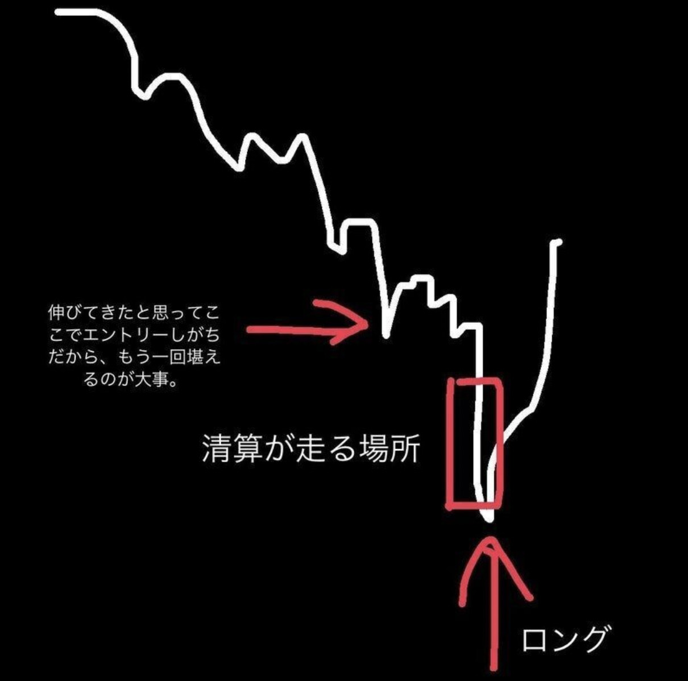
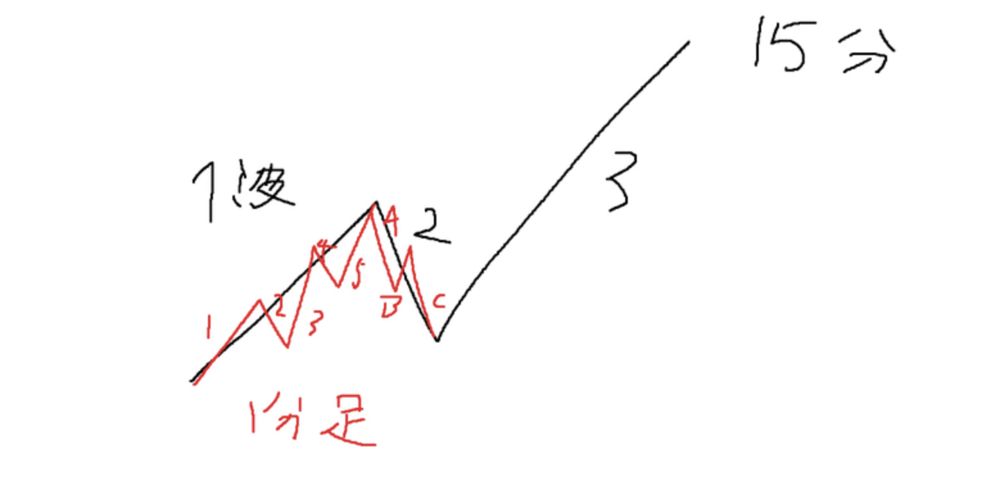
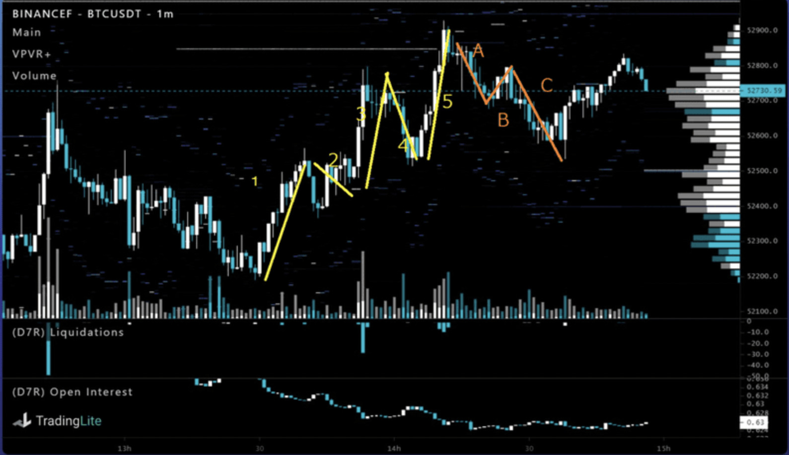
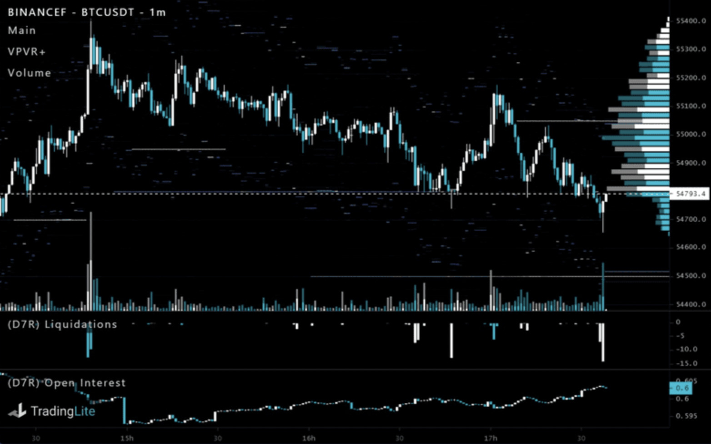
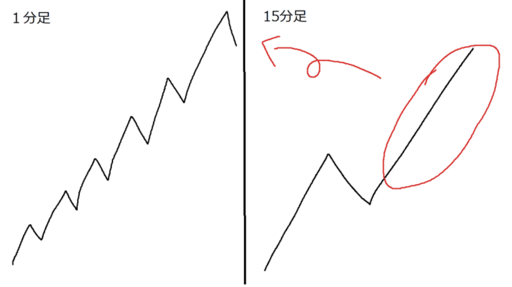
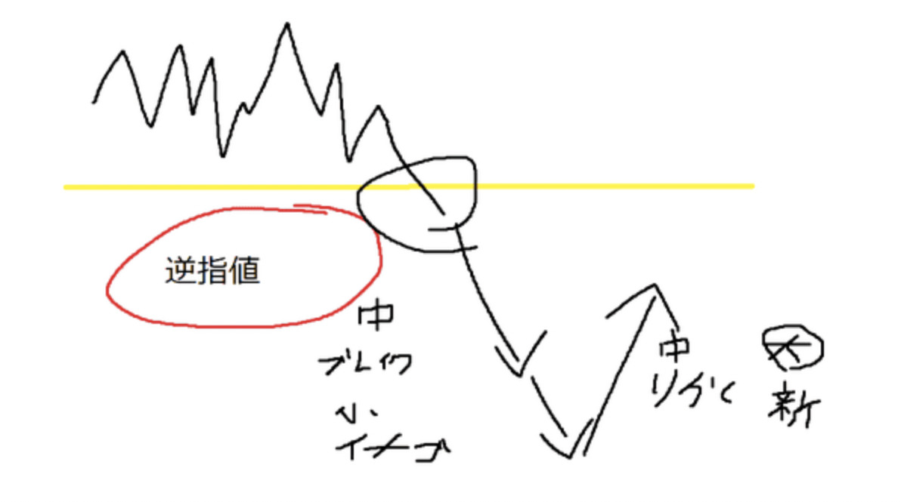
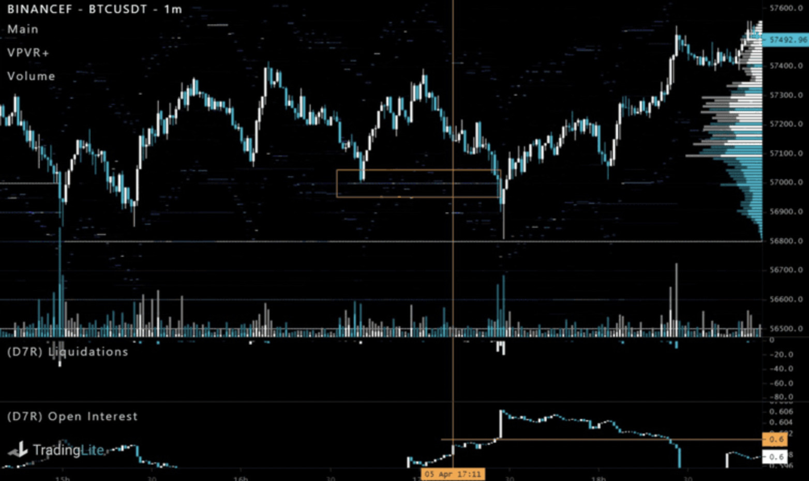
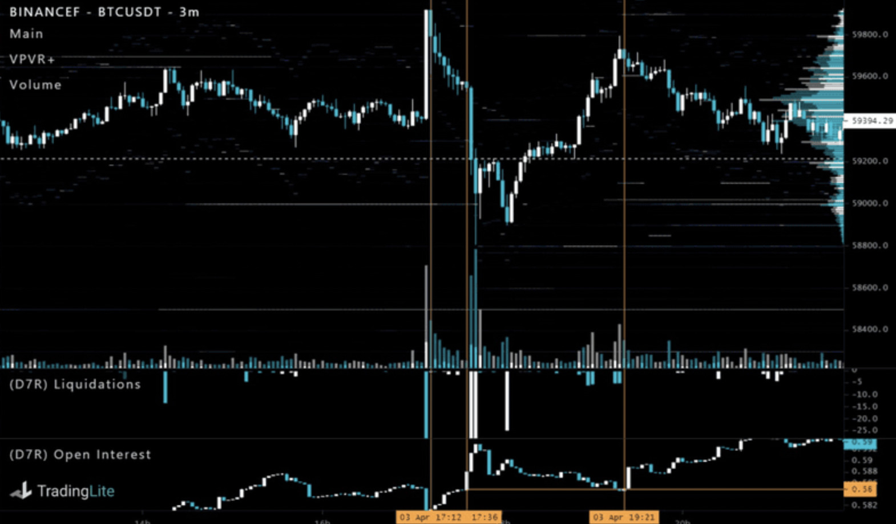
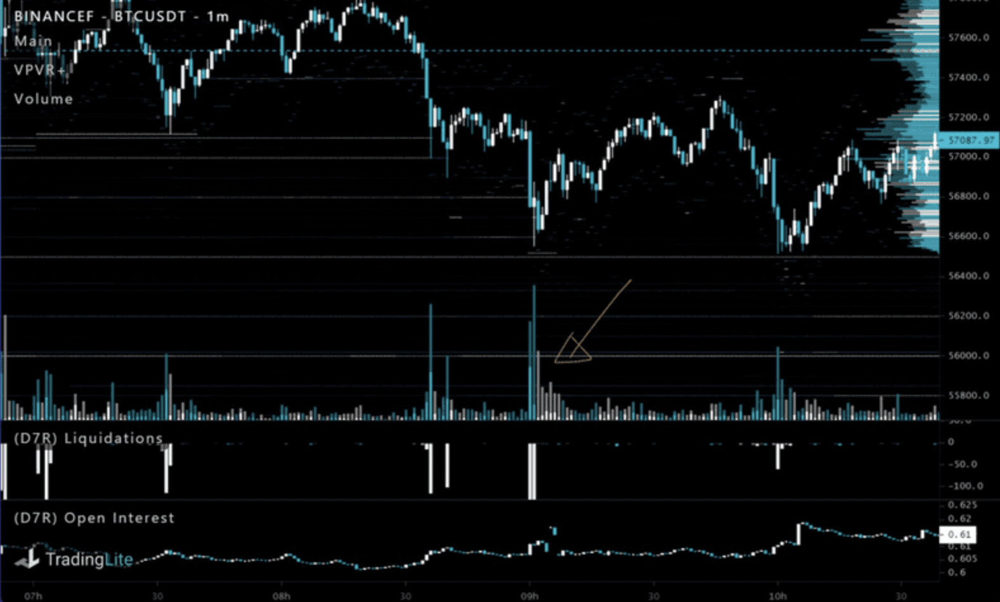

相場とサーフィンはよく似てる
1.リバ取りについて

リバ取り。リバーサルを取ること。急落に対して反発。そのままっすね。
主な判断材料
水平線の位置、エリオット波動、精算の有無、OIの増減、、出来高、 VPVR、横軸、デリバ乖離
となります。
まずエリオット波動の話を入れておきます。僕はエリオット波動をエントリ ーの根拠の一つとして取る事はあまりありませんが環境認識に使うことで事 故を減らせます。
前提としてエリオット波動はこうなりやすい、こう考えたら自然ってなるだ けなので絶対当てはまるわけではないです。もはやオカルトに近い領域です
エリオットの解説を端的に
まず前提としてエリオット波動は
1波→2波→3波→4波→5波→A波→B波→c波
| 推進波 | 調整波 |
として構成されます。
これを相場心理を考えてみると
大口(第一波)→調整(第二波)→中口(第三波)→利確(第四波)→養分 (第五波)
BTCだとこのような構図になることが多いと思います。エリオット波動はフラクタル構造なので大きな1波の中にまた推進と調節があります。図にするとこんな感じ。

必要な認識としてはフラクタル構造ということ、波の中にまた小さい波があるということ。下降の場合は反転して考えてください。
具体的に何処を狙うか。僕は1分足レベルでの1波、3波、A波です。
上位足に関しては何でも良い。ちょっと分かりづらいのでチャート見ながら説明します。

個人的にわかりやすいパターンはこれ2波の判定がちょっとびみょいけどこ こで僕は5波を取りに行きました。
たいてい2波ってフィボナッチリトレースメントを活用すると50〜61あ たりで止まることが多いです。線を引いてある前のチャートを見てみるとコ レも5波のリズムで下がってますよね。これも根拠の一つとなりました。
上でも記述したとおりあくまでこうなる割合が高いというだけなので特に下位足ではカウントとして使うのは機能しないことも多いです。本質はそこじゃないので。
逆に分かりづらいパターンは

ぐっちゃぐちゃで分かりづらい。
こういう場合って上記でも記述しましたけど大抵上位足のどこかに属してます。

イメージとしてはこんな感じです。下位足ほど法則を崩しやすいというのがこういった例です。
大切なのでもう一度明記しておきますが本質的にはこの概念が大切だと思っています。
大口(第一波)→調整(第二波)→中口(第三波)→利確(第四波)→養分 (第五波)
リバ取りで最も大切なのは養分を狩ることです。
見てる指標
リバ取りって要は相場の需給の一瞬の歪みを取りに行くものです。
BTCは特に為替や商品と比べても需給に関する指標が多いのでWhyの部分を深めていけます。あくまで目的はリバを取るための養分を観測することにあるのでそれを念頭に置いて欲しいです。
水平線
水平線の概念は必要だけど引きすぎてもバイアスかかるからいらない。 突き詰めれば期待値は取れるのでしょうけど水平線単体で見た時反発するか どうかというのは判断がなかなか難しいです。
どこ抜けたらここまで走るって目安にするくらいが良いです。後述するVPVR と組み合わせて使おう。
結局の所リバを取りたいわけなので、ある程度落ちる必要がある。
となるとここ割ったらやばそーってところに引くのが○。そもそも取引所ご とに価格が違いますしバチバチ効くのは錯覚です。
ただ前日終値(今日の日足の始値)だけは引いています。これもあくまで反発がどうとかじゃなくて意識される場所なので目安としてです。僕コレしか基本的に引きません。
清算(Liquidations
清算が出るとリバる割合が高いです(結論)
あと波の転換点には精算が大きく出ることが多いイメージです。
理由としては例えば上目線で考えるとで大口が上に上げたいと思う時中口以下がロングポジを持ってると上げづらいんですよ(ショート決済故に)だから下に振って清算おこしてショート貯めさせてその決済(ロング)+自分のロングで上に持っていくのがベターです。
BTCの市場規模だからこそこういった力技ができるわけですね。
この性質を上手く使って養分を狩ります。

↑の図の通り硬い抜けたら一気に価格が走るんですけど順序として 逆指値にてカット(ロングのショート決済)→イナゴ(突っ込みショート) となり、このイナゴがキモです。
OIの増減
TwitterとかでOIが溜まってきたとか偶に騒ぐ輩いますけどぶっちゃけ溜まってるか溜まってないかはあんまり関係ないです。
大切なのはどこでOIが溜まったかです。OIは指標としては特に大事にしてて エントリー、決済の根拠にしてます。なんなら決済は大抵コレ。

結構わかりやすいのがこういうタイプ17:11くらいからOIがヨコヨコし てておそらく上げ派と下げ派が喧嘩しあってる状態ですね。
そして四角で囲ったところにそこそこ大きい板が合って前回のロングの逆指 値が溜まってそうな場所のでここは抜けさせたくないと言う意思をふつふつ 感じます。
そしてそこを抜けた後水平線を引いたところからOIが急上昇してるのが分か りますか?おそらく突っ込みショートによってOIが急上昇し出来高を伴って 価格が急下落してます。となるとこういった場合の大半は価格の行き過ぎす なわちオーバーシュートである可能性が高いです。

もういっこ例えを。
価格が急下落してる場所のOIを見てみてください。OIは増加してるはずで す。この場合だとおそらくカバーの急上昇の後徐々に下がりつつ水平を割ったため逆指値が入る+イナゴショーターが入った故にOIが急上昇してます。 大口はこういうところを狩りにに来るのでここに逆張りをあてたいねって 話。
他にも根拠いくつか紹介しますけど僕これをかなり大切にしています。決済の目安にも使えてどわかりやすく縦線引いたんですけどOIが急上昇(イナゴショーター)→OIが減少(徐々に上げてきたため利確or損切していって る)僕の場合OIの上昇の起点となった場所で決済する場合が多いです。
突っ込みがあらかた解消されたのでこの後の動きはイレギュラーが多いです。もしくは直近安値。OIはあくまで目安なので柔軟に対応してください。
出来高、出来高デルタ
使い方自体は結構シンプルでアクションに対して出来高が伴ってるか否かです。少ないとすっぽ抜けただけでリバが弱いことが多いです。逆はそういう事。

VPVR
水平線の答え合わせみたいな感じで使ってます。真空帯を見つけてどこまでスッポ抜けるかなーってのを探すイメージです。4時間〜日足くらいの水 準だとPOCが抵抗線の目安にもなります。短い時間足だと効きづらい場合も多いです。
乖離について
要はデリバがどれだけ突っ込んでるか。現物に対してデリバティブの価格 のほうが高い=ロングが多い=ショートの決済が控えてる故です。逆も然 り。上乖離だと上げづらいし下乖離だと下げづらい。
リバ取りの場合価格が急下落した後に上乖離してたのが一気に萎んだらチャ ンスです。要はデリバが急激に売ってるってことなので価格が逆方向にはね やすいです。乖離が一気に縮まったタイミングを狙いましょう。Twitterとか で相場実況してる人がデリバイキるな!とかいってるのは基本コレです。
これらの指標同士の組み合わせ
僕が使ってる指標をざっと説明してみましたが単体でも勿論作用するのです が相関性を考えることでwhyの部分をより深めていくことが出来ます。
僕の場合はプライスアクションとOIを基軸にその他指標を組み合わせて判断 します。こうなったらこうなりやすいみたいなのは上で解説しているので実 際チャートみて検証した後自分なりのフィルターを作って手法を作ってみて ください。↑の全部パクってるだけでも今の相場では普通に通じると思いま す。
波の観測について
エリオット波動をある程度理解した上で見てほしいです。こっちが本題。
大きい波の中に小さい波も含まれると先程表現しましたがどこのどの波を捉 えるかでかなり狼狽が減ります。一つの波に対して分解してみると陰線と陽 線の数って平均的に見ると同じだそうです。リバ取りのときってロング、シ ョートの一瞬の歪みをかっさらうイメージなので当然底値付近では陽線陰線 がびゅんびゅん走りますw
でもそれ自体を一つの波として捉えて考えた時どこまで伸びるか、どこまで 抜けたら切るかっていうのを考えてほしいです。ローソクではなく波として しつこいけど何回でも言います。大口の仕掛けの波なんてわからないので養 分を乗せる波を捉えればそれを殺す波に乗ろうぜって感覚です。
波動を観測できることの一番のメリットって”待つ”って行為が抜群に上達す ることにあると考えています。ここまで来たら買い、売り、波がグッチャグ チャでよくわからないので何もしない等...
損切の目安
エントリーに対しては散々語りましたが損切に関してはほとんど明記してないのでここで触れていきます。
察しのいい人は気づいているかと思いますがリバ取りは短期的に見たら逆張 りです。つまり下降トレンドに対してロングをぶつけるわけなのでタイミン グが合わなければ延々担がれるわけです。損切は割とシンプルにダウ理論的 に下降トレンドが継続するようなところで良いかと。 僕の場合はここの水平線割ったらやべえ...見たいところ抜けたら切るように してます。またOIが急上昇→すぐ戻らずヨコヨコとかでも切ってます。
実際のエントリーのタイミング
つらつらエントリーの根拠は書いてきたつもりですが実際どんなタイミング でエントリーするかは書いてないです。
先ず上位足での水平及びVPVRの確認、そしてチャートパターンの確認。
水平の確認が終わったらOIの増減してる場所、板の位置を確認しオーバーシ ュートがどこまで走るか確認します。大抵板が厚い場所は食ってから成り行 きぶつけたほうが良いです。↑でも書きましたがOIが急上昇するタイミング があるのでそれも待ちましょう。ローソク1.2本分遅れますがそれでも十 分な値幅が期待できます。精算が出てると尚good。後は現先が下乖離シてる かどうかも問題となります。どちらかと言うと上乖離してるなら入らないと 行った感じでしょうか。
さて指標関係は良いんですけど問題はローソクですよね。
下落と上昇の流れが変わりやすいところは精算が大きく出て且つ大きい出来 高を伴いデルタ差が少ない場所となります。割と僕は出来高は重要視してて イマイチ出来高が伴ってない場合だと見送ることも多々あります。
もうちょい簡単な場所があって、それが時間足更新のタイミングです。
勢いによっては下位足での更新の タイミングも十分効力を発揮しますが基本的に15分足以上のほうが良いで す。そして確定のタイミングで自分が見てる上位足のプライスアクションを 元に期待値を算出します。上位が確定してないのであればどういう形で確定 するのか考察して立ち回ります。理想の形じゃなければ半リグ、損切等も確 定タイミングで判断します。
最後に
「要はサーフィンと同じさ。coolな波が来ないなら待てばいいだろ?」